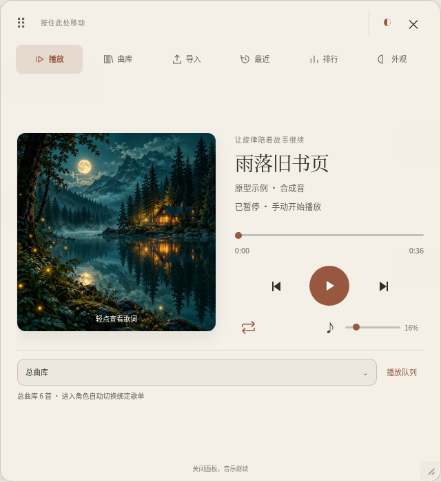
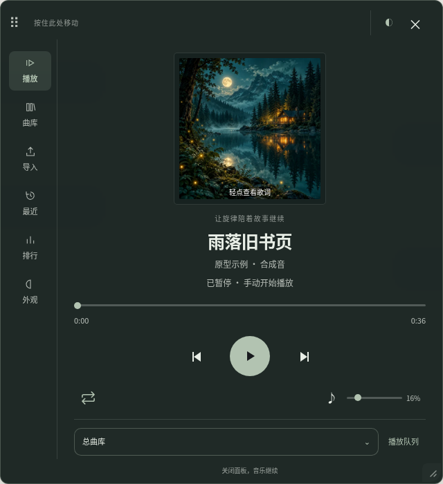

<!doctype html><html lang="zh-CN"><meta charset="utf-8"><meta name="viewport" content="width=device-width,initial-scale=1"><title>两套设计方向对比</title><style>
*{box-sizing:border-box}body{margin:0;background:#e5e7e1;color:#313c33;font-family:-apple-system,BlinkMacSystemFont,"Microsoft YaHei",sans-serif;padding:30px}header{max-width:1300px;margin:0 auto 22px}h1{font-size:23px;font-weight:550;letter-spacing:.03em;margin:0 0 10px}p{font-size:12px;color:#657063;margin:0;line-height:1.7}main{display:grid;grid-template-columns:1fr 1fr;gap:24px;max-width:1300px;margin:auto}figure{margin:0}figcaption{margin:0 0 13px;font-size:17px;font-weight:550}figcaption small{display:block;font-size:12px;font-weight:400;margin-top:7px;color:#657063}img{display:block;width:100%;height:auto}footer{max-width:1300px;margin:18px auto 0;font-size:11px;color:#657063}@media(max-width:600px){body{padding:16px}main{grid-template-columns:1fr}}
</style><header><h1>同一个播放器，两种听音气质</h1><p>独立原型 · 未替换正式界面 · 复用现有播放与角色逻辑 · 示例音频为合成音</p></header><main><figure><figcaption>A　纸上听音<small>米纸与陶土棕 · 横向唱片册 · 舒展、温润</small></figcaption></figure><figure><figcaption>B　夜航听音<small>深墨绿与鼠尾草 · 侧栏听音室 · 安静、紧凑</small></figcaption></figure></main><footer>两套方案均保留主题、字体、图片背景、黑胶与歌词；最终视觉方向待确认。</footer></html>
